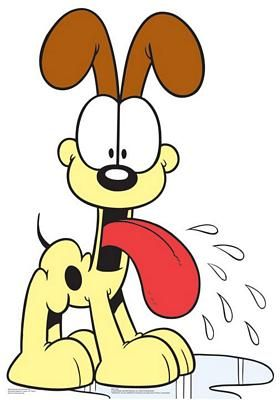

Garfield nació el 19 de junio de 1978, en la cocina del restaurante italiano Mamma Leoni, de su madre y su padre, pesando 5 libras y 6 onzas al nacer. Él amó la lasaña desde el día que nació, y siempre ha sido su comida favorita desde entonces. Sin embargo, a diferencia de la mayoría de su familia, incluso sus padres, que eran "monstruos" devoradores de los roedores, el restaurante propietario del restaurante italiano de Mamma Leoni tenía que elegir entre mantener al glotón insaciable de Garfield o clausurar su restaurante debido a la falta de pasta, por lo que el joven Garfield fue vendido a una tienda de mascotas. El 19 de agosto de 1978, cuando Jon llegó a la tienda de mascotas, tuvo que elegir entre Garfield, una iguana y una roca para mascotas. En la tira cómica del 14 de noviembre de 1978, Jon citó: "Me encantan los gatos, yo quería un gato... Entonces, ¿qué hago? Voy a la tienda de mascotas y pido un gato ¿Qué me dan? Una lasaña con pelaje y colmillos".

gracioso no?
Odie es el beagle adorable, aparentemente tonto, amable, de bajo peso, de pelaje amarillo y orejas marrones, que es el mejor amigo de Garfield (y la víctima habitual). Aunque Garfield dice que es tonto, Odie puede ser relativamente inteligente en ocasiones. Es capaz de comunicar oraciones articuladas a través de ladridos. Garfield lo describió una vez como "honesto, verdadero azul y decente". Él está jadeando constantemente con su lengua muy grande. A menudo babea enormes charcos. Los significados de sus ladridos no son realmente discernibles como uno podría suponer, y Garfield solo los hace evidentes.
